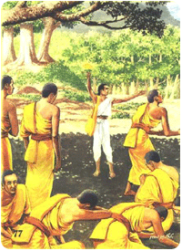

|
วันอัฏฐมีบูชา
วันคล้ายวันถวายพระเพลิงพระพุทธสรีระ (ถวายพระเพลิงพระบรมศพพระพุทธเจ้า) นำเสนอโดย...พระมหาบุญโฮม ปริปุณฺณสีโล (ไชยฤทธิ์) วัดท่าไทร จ.สุราษฎร์ธานี |
|
ความหมาย เมื่อพระพุทธเจ้าปรินิพพานแล้ว แต่ยังไม่สว่าง พระอนุรุทธะ กับ พระอานนท์ก็แสดงธรรมไปจนสว่าง พอสว่างแล้ว พระอนุรุทธะจึงบัญชาให้พระอานนท์ไปบอกข่าวปรินิพพานแก่มัลลกษัตริย์ พอมัลลกษัตริย์ได้ฟังข่าวแล้วต่างก็โศกเศ้ร้าอย่างหนัก และสั่งให้ราชบุรุษเที่ยวตีกลองประกาศแจ้งข่าวนั้นทั่วเมือง แล้วนำเครื่องสักการะบูชา เครื่องดนตรี ผ้าอย่างดี ๕๐๐ พับ เสด็จไปสู่สาลวันพร้อมกัน บูชาพระพุทธสรีระอย่างมโหฬารสิ้นกาล ๖ วัน ๖ คืน
ครั้นรุ่งขั้นวันที่
๗ ก็ปรึกษากันว่า จะเชิญพระสรีระไปทางทิศใต้แห่งพระนคร แล้วถวายพระเพลิงนอกเมือง,
ครั้งนั้น มัลลปาโมกข์ทั้ง ๘ พระองค์ ซึ่งมีกำลังมาก พร้อมกันเข้าอัญเชิญพระพุทธสรีระ
ตแก็ไม่สามาารถที่จะให้เขยื้อนจากที่ได้ ท่านเหลานั้นรู้สึกแปลกใจ
จึงถามพระอนุรุทธ ๆ ก็ตอบว่า "ที่ทำไปนั้นขัดกับความประสงค์ของเทวดา
เทวดาประสงค์จะอัญเชิญพระพุทธรสรีระไปทางทิศเหนือแห่งพระนครแล้ว เข้าทางประตูทิศเหนือ
ผ่านไปท่ามกลางพระนคร เยื้องไปออกทางประตูทิศตะวันออก แล้วถวายพระเพลิงพระพุทธสรีระที่มกุฏพันธนเจดีย์
ซึ่งอยู่ที่ด้านตะวันออกแห่งพระนคร" พวกมัลลกษัตริย์ได้ยินเช่นนั้นจึงผ่อนผันตามประสงค์ แล้วประดิษฐานบนจิตกาธาร คือ เชิงตะกอนที่ทำด้วยไม้หอมล้วย ๆ แล้วมัลลปาโมกข์ ๔ พระองค์ก็นำเพลิงเข้าไปจุดยังเชิงตะกอนทั้ง ๔ ทิศ แต่ก็ไม่สามารถจะจุดให้เพลิงติดได้ มีความสงสัยจงตรัสถามท่านพระอนุรุทธะ และท่านก็เฉลยให้ทราบว่า "เทวดาให้รอพระมหากัสสปะ ได้ถวายบังคมพระพุทธบาทด้วยเศียรเกล่าเสียก่อน" มัลลกษัตริย์จึงผ่อนผันตาม.  ขณะนั้น พระมหากัสสปะพร้อมด้วยภิกษุ ๕๐๐ รูป กำลังเดินทางจาก ปาวานคร แวะพักอยู่ที่ร่มไม้แห่งหนึ่ง ได้เห็นอาชีวกผู้หนึ่ง ถือดอกมณฑารพเดินมาแต่ไกลหวังไปเมืองปาวานคร พระมหากัสสปะจึงถามข่าวพระพุทธเจ้า, อาชีวกนั้นก็ตอบว่า พระสมณโคดมได้บรินิพพานไป ๗ วันแล้ว" ลำดับนั้น ภิกษุที่ยังไม่สิ้นราคะ ก็ร้องไห้กลิ้งเกลือกไปมา ส่วนภิกษุที่เป็นพระอรหันต์ขีณาสพก็มีสติสัมปชัญญะอดกลั้นด้วยธรรมสังเวช,ขณะนั้นภิกษุแก่รูปหนึ่งชื่อ"สุภัททะ" ได้ติดตามพระเถระและภิกษุทั้งหลายด้วย ได้ร้องกล่าวห้ามขึ้นว่า "หยุดเท่านั้นเถิดท่านทั้งหลาย อย่าได้เศร้าโศกถึงพระสมณะนั้นเลย เราทั้งหลายได้พ้นจากพระสมณะนั้น ด้วยว่าพระองค์ทรงสังสอนว่าสิ้งนี้ควร สิ่งนี้ไม่ควร เราทั้งหลายเกรงก็ต้องทำตาม จึงลำบากนัก, บัดนี้ พวกเราจะทำสิ่งใดก็ได้ตามความพอใจไม่เกรงบัญชาใคร" พระมหากัสสปะได้ฟังเช่นนั้น คิดจะทำนิคคหกรรม (ทำโทษ) แต่เห็นว่ายังมิควรก่อน จึงปลอบโยนภิกษุทั้งหลายโดยชอบธรรม แล้วรีบนำภิกษุทั้งหลายไปสู่กุฏันธนเจดีย์
ครั้งเข้าไปใกล้จิตกาธาน
(เชิงตะกอน) จึงทำผ้าอุตตราสงฆ์ (จีวร) ให้เฉวียงข้างหนึ่ง ประฌมมือขึ้นนมัสการ
กระทำประทักษิณ (เวียนรอบ) จิตกาธาร ๓ รอบ แล้วถวายบังคมพระบาททั้งคู่ด้วยเศียรเกล้า
เมื่อมหากัสสปะและภิกษุ ๕๐๐ รุ) ถวายบังคมแล้ว เตโชธาตุ (ไฟ ) อันเป็นทิพย์ก็ได้เกิดขึ้นเอง
ลุกโชติช่วงเผาพระพุทธสรีระพร้อมทั้งจิตกาธาร ซึ่งการถวายพระเพลิงพระพุทธสรีระนี้ได้เกิดขึ้นเมื่อ
วันพุธ แรม ๘ ค่ำ เดือน ๖ ปีมะเส็ง ก่อน พุทธศก ๑ ปี โดยมีมัลลกษัตริย์เป็นเจ้าภาพจัดการพระศพ
โดยได้ถวายพระเพลิงที่ มกุฎพันธนเจดีย์ ด้านทิศตะวันออกภายนอกกรุงสินารานั่นเอง
การถวายพระเพลิงพระพุทธสรีระ
(พระศพ) นั้น เตโชธาตุ (ไฟ) ได้ติดจิตการธารขึ้นเอง ด้วย อานุภาพของเทวดา
ไม่มีใครนำไฟเข้าไปจุด และพระเพลิงนั้นก็ไม่ได้เผาไหม้ไปหมดทุกอย่าง
ยังคงเหลือไว้แต่บางส่วน คือเหลือไว้ ๕ อย่าง ได้แก่.
ประวัติความเป็นมา พุทธศาสนิกชนบางส่วนโดยเฉพาะพระสงฆ์และอุบาสกอุบาสิกาแห่งวัดนั้น ๆ ได้พร้อมกันประกอบพิธีบูชาขึ้น เป็นการเฉพาะภายในวัด เช่นที่ปฏิบัติกันอยู่ในวัดมหาธาตุยุวราชรังสฤษฏิ์ เป็นต้น แต่จะปฏิบัติกันมาแต่เมื่อใด ไม่พบหลักฐาน ปัจจุบันนี้ก็ยังถือปฏิบัติกันอยู่
คำถวายดอกไม้ธูปเทียนในวันอัฏฐมีบูชา
ยะมัมหะ
โข มะยัง, ภะคะวันตัง สะระณัง คะตา, โย โน ภะคะวา สัตถา, ยัสสะ จะ
มะยัง, ภะคะวะโต ธัมมัง โรเจมะ, อะโหสิ โข โส ภะคะวา, มัชฌิเมสุ ชะนะปะเทสุ,
อะริยะเกสุ มะนุสเสสุ อุปปันโน, ขัตติโย ชาติยา, โคตะโม โคตเตนะ, สักยะปุตโต
สักยะกุลา ปัพพะชิโต, สะเทวะเก โลเก สะมาระเก สะพรัหมะเก, สัสสะมะณะพราหมะณิยา
ปะชายะ สะเทวะมะนุสสายะ, อะนุตตะรัง สัมมาสัมโพธิง อะภิสัมพุทโธ, นิสสังสะยัง
โข โส ภะคะวา, อะระหัง สัมมาสัมพุทโธ, วิชชาจะระณะสัมปันโน, สุคะโต
โลกะวิทู, อนุตตะโร ปุริสทัมมะสาระถิ, สัตถา เทวะมะนุสสานัง, พุทโธ
ภะคะวา สวากขาโต โข ปะนะ, เตนะ ภะคะวา ธัมโม, สันทิฏฐิโก, อะกาลิโก,
เอหิปัสสิโก โอปะนะยิโก, ปัจจัตตัง เวทิตัพโพ วิญญูหิ. สุปะฏิปันโน
โข ปะนัสสะ, ภะคะวะโต สาวะกะสังโฆ, อุชุปะฏิปันโน ภะคะวะโต สาวะกะสังโฆ,
ญายะปะฏิปันโน ภะคะวะโต สาวะกะสังโฆ, สามีจิปะฏิปันโน ภะคะวะโต สาวะกะสังโฆ,
ยะทิทัง จัตตาริ ปุริสะยุคานิ, อัฏฐะ ปุริสะปุคคะลา, เอสะ ภะคะวะโต
สาวะกะสังโฆ, อาหุเนยโย, ปาหุเนยโย, ทักขิเนยโย อัญชลีกะระณีโย. อะนุตตะรัง
ปุญญักเขตตัง โลกัสสะ. อะยัง โข ปะนะ ถูโป(ปฏิมา) ตัง ภะคะวันตัง อุททิสสะ
กโต (อุททิสสิ กตา) ยาวะเทวะ ทัสสะเนนะ, ตัง ภะคะวันตัง อะนุสสะริตวา,
ปะสาทะสังเวคะปะฏิลาภายะ, มะยัง โข เอตะระหิ, อิมัง วิสาขะปุณณะมิโตปะรัง
อัฏฐะมีกาลัง, ตัสสะ ภะคะวะโต สรีรัชฌาปะนะกาละสัมมะตัง ปัตวา, อิมัง
ฐานัง สัมปัตตา, อิเม ทัณฑะทีปะธูปะ-, ปุปผาทิสักกาเร คะเหตวา, อัตตะโน
กายัง สักการุปะธานัง กะริตวา, ตัสสะ ภะคะวะโต ยะถาภุจเจ คุเณ อะนุสสะรันตา,
อิมัง ถูปัง(ปะฏิมาฆะรัง) ติกขัตตุง ปะทักขิณัง กะริสสามะ, ยะถาคะหิเตหิ
สักกาเรหิ ปูชัง กุรุมานา. สาธุ โน ภันเต ภะคะวา, สุจิระปะรินิพพุโตปิ,
ญาตัพเพหิ คุเณหิ, อะตีตารัมมะณะตายะ ปัญญายะมาโน, อิเม อัมเหหิ คะหิเต,
สักกาเร ปะฏิคคัณหาตุ, อัมหากัง, ฑีฆะรัตตัง, หิตายะ, สุขายะ. ประเพณีการถวายพระเพลิงพระบรมศพพระพุทธเจ้า (วันอัฏฐมีบูชา) คือ การบูชาในดิถีที่ 8 ซึ่งเป็นวันแรม 8 ค่ำ เดือน 6 ตามจันทรคติ สำหรับที่มาของการบูชาในวันดังกล่าวนี้ เนื่องจากพระพุทธเจ้าเสด็จดับขันธปรินิพพาน เมื่อวันขึ้น 15 ค่ำ เดือน 6 บรรดาพระอรหันตสาวก และมัลละกษัตริย์ ได้มีการบำเพ็ญกุศลถวายตลอดมาครบ 7 วัน ครั้นถึงวันที่ 8 เป็นดิถีอัฏฐมีบูชา จึงอัญเชิญพระบรมศพพระพุทธเจ้าแห่ไปประดิษฐาน ณ มกุฎพันธเจดีย์ แล้วเตรียมการถวายพระเพลิงพระบรมศพพระพุทธเจ้าในเวลาต่อมา ซึ่งพุทธศาสนิกชนตำบลวัดละมุด อำเภอนครชัยศรี จังหวัดนครปฐม ได้ถือปฏิบัติดจัดงานประเพณีถวายพระเพลิงพระบรมศพพระพุทธเจ้า 100 กว่าปีมาแล้ว นับเป็นพระเพณีวันสำคัญทางพระพุทธศาสนา ในสมัยพุทธกาล เพื่อมุ่งหวังให้เป็นเครื่องเตือนสติพุทธศาสนิกชนให้รำลึกถึง พระพุทธคุณ พระธรรมคุณ และพระสังฆคุณ อันเป็นหลักธรรมแห่งการประพฤติปฏิบัติ ตามขนบธรรมเนียมประเพณีทางพระพุทธศาสนาที่ดีงาม ให้คงอยู่กับชุมชนท้องถิ่นตำบลวัดละมุดตลอดไป การจัดงานประเพณีถวายพระเพลิงพระบรมศพพระพุทธเจ้า (วันอัฏฐมีบูชา) จัดในวันแรม 8 ค่ำ เดือน 6 ตรงกับวันศุกร์ที่ 23 พฤษภาคม พ.ศ. 2546 โดยจัดให้มีกิจกรรมทางพระพุทธศาสนาตั้งแต่เช้า เช่น การถวายภัตตาหารเช้าแด่พระสงฆ์ การจัดขบวนแห่งภาพเหตุการณ์ตามพุทธประวัติ และจำลองไตรภูมิเกี่ยวกับนรกภูมิ ที่แสดงถึงเหตุการณ์การทำผิดศีลข้อต่าง ๆ ซึ่งจะได้รับกรรมตอบสนองในรูปแบบที่แตกต่างกันออกไป เพื่อต้องการย้ำเตือนให้พุทธศาสนิกชนที่ไปร่วมงานได้เกิดสติ คำนึงถึงบาปบุญคุณโทษ มีความเกรงกลัวที่จะกระทำต่อบาป และจำลองพิธีถวายพระเพลิงพระบรมศพพุทธเจ้า นอกจากที่กล่าวมาแล้ว ยังมีมหรสพ การละเล่น และจุดดอกไม้ไฟ ถวายเป็นพระพุทธบูชา สำหรับพิธีกรรมของการถวายพระเพลิงพระบรมศพพระพุทธเจ้า เริ่มงานตั้งแต่เช้าในวันศุกร์ที่ 23 พฤษภาคม มีการถวายภัตตาหารเช้า แด่พระสงฆ์ ในช่วงบ่ายมีขบวนแห่ตามพุทธประวัติจากหมู่บ้านต่างๆ จำนวน 9 ขบวน เดินทางมายังวัดใหม่สุคนธาราม และพิธีอัญเชิญพระบรมศพพระพุทธเจ้าจำลอง ไปประดิษฐานไว้ ณ พระเมรุมาศจำลอง ซึ่งเป็นพระเมรุมาศลักษณะทรงสูงได้ที่รับการตกแต่งอย่างสวยงาม ด้วยการแทงหยวก และประดับด้วยแพรพรรณ รวมทั้งจัดโต๊ะหมู่บูชาและพระพุทธรูปปางไสยาสน์ประดิษฐานไว้หน้าพระบรมศพพระพุทธเจ้า เมื่อขบวนแห่จากหมู่บ้านต่าง ๆ เดินทางมาถึงวัดใหม่สุคนธารามแล้ว (เวลา 16.00 น.) ต่อจากนั้นเป็นพิธีสงฆ์ โดยหลังจากอัญเชิญพระบรมศพพระพุทธเจ้าแล้ว คณะพราหมณ์ พระสาวก และสาธุชนเวียนทักษิณาวัตรรอบมณฑลพิธี ประธานฝ่ายสงฆ์นำถวายสักการะ แด่พระบรมศพระพุทธเจ้า พิธีกรกล่าวนำถวายผ้าป่า และพลุ ตะไล เพื่อจัดถวายเป็นพุทธบูชา ต่อจากนั้น พระสงฆ์ทำวัตรพระ (การขอขมาพระพุทธเจ้า) และสวดสรรเสริญพระพุทธคุณ และถวายดอกบัว เป็นพุทธบูชา หลังจากนั้นขบวนดอกไม้ไฟ เคลื่อนออกจากมณฑลพิธี ไปจุดถวายเป็นพุทธบูชา ถือเป็นเสร็จพิธี นับเป็นงานบุญประเพณีที่พุทธศาสนิกชน ควรช่วยกันอนุรักษ์ และสืบทอดให้คงอยู่กับชุมชนต่อไป หนังสืออ้างอิง.- -บุญโฮม
ปริปุณฺณสีโล(ไชยฤทธิ์),พระมหา,คู่มือเรียนนักธรรมและธรรมศึกษาชั้นตรี,
ฉบับพิมพ์โรเนียวเย็บเล่ม, สำนักศาสนศึกษาวัดท่าไทร จ.สุราษฎร์ธานี,
๒๕๓๕
|